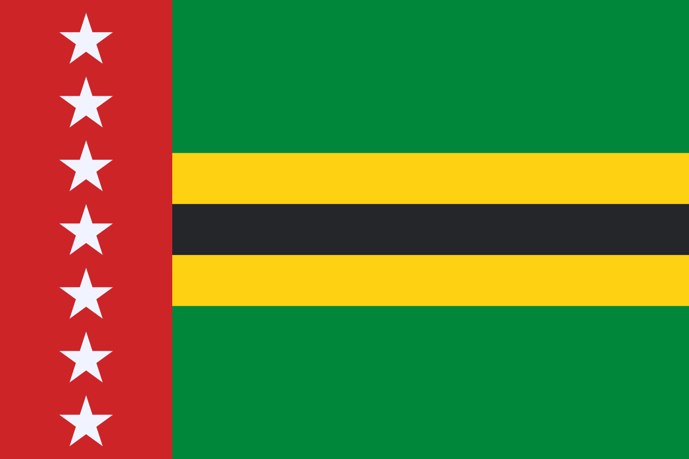

Departamento de Santander
Bandera de santander

Informacion y Economia
Santander es uno de los treinta y dos departamentos de la República de Colombia, con capital en Bucaramanga. Está ubicado al noreste del país, en la región andina.
Con unos 2 280 908 habitantes en 2018 es el sexto departamento por población. Recibe su nombre en alusión a Francisco de Paula Santander, prócer de la independencia de la Nueva Granada.
Está conformado por 87 municipios y un Distrito Especial Estos entes territoriales se agrupan en siete provincias: Comunera, García Rovira, Guanentá, Metropolitana, Yariguíes, Soto Norte y Vélez.
Sitios turisticos
- Cañón del Chicamocha y Parque Nacional del Chicamocha
Este impresionante cañón tiene unos 227 km de longitud y una profundidad promedio de 2 000 m, abarcando unas 108 000 ha
- Quebrada Las Gachas
Destino de naturaleza en estado puro: pozas naturales con aguas verdes y tonos rojizos, formadas sobre piedra rojiza un espectáculo visual similar al Caño Cristales del Meta
- Barichara
Considerado “el pueblo más lindo de Colombia”, fue declarado Monumento Nacional en 1978. Calles empedradas, arquitectura colonial y miradores con vistas sobre el valle del Río Suárez lo hacen un destino imperdible.
También cerca se encuentran las cascadas Juan Curí, ideales para senderismo y deportes de aventura como rape
- Mesa de los Santos
apta para el turismo de café, aventura y glamping
- San Gil
capital de los deportes de aventura: canotaje, espeleísmo, torrentismo y más
Comida Tipica
- Cabrito
preparado frito, asado o al horno, acompañado normalmente con arepa santandereana y mute
- Arepa Santandereana:
elaborada con maíz pelado, a veces con chicharrón o queso, asada en tiestos de barro
- Mute
sopa sustanciosa con res, cerdo, callo, maíz, legumbres y verduras; tradicionalmente consumida los domingos
- Pepitoria
guiso sabroso hecho con vísceras del cabro o cordero, usualmente acompañado de arroz, papa o yuca
- Carne oreada
carne salada y seca al sol, luego asada, muy común en piqueteaderos
Santander Encanta